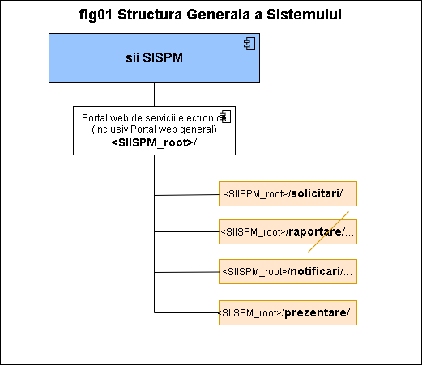

SIISPM System
Arhitectura sistemului
Cuprins:
Introducere
Acest document prezinta arhitectura generala (High Level design) a sistemului:
- o descriere sumara a fiecarei componente (raspunde intrebarii "de ce exista acea componenta?")
- modul general de interconectare intre componente (in principiu si prin exceptie numai pentru situatiile in care acesta NU ESTE EVIDENT si CLASIC / TEORETIC din numele acestuia)
Arhitectura sistemului va fi prezentata intr-o abordare "TOP-DOWN" pentru a oferi o imagine clara si progresiva asupra acestuia.
Arhitectura logica nivelul TOP
Nivelul de TOP reprezinta "punctul cel mai de extern de expunere si adresare a sistemului", cel care va fi folosiit in mod curent de marea majoritate a utilizatorilor. Arhitectura vazuta la acest nivel se prezinta in diagrama urmatoare:

La acest nivel SIISPM se prezinta ca un set de servicii majore si relevante pentru consumatorii finali. Aceste sunt asigurate prin si deservite de catre portalul principal al companiei sau de catre o pagina specializata, pagina relativ simpla ce permite accesul nerestrictionat oricarui vizitator (master page sau landing page). Aceasta componenta se refera la (c1) Portal web servicii electronice prezentata in "Vedere de ansamblu".
(c1) Portal web servicii electronice
Aceasta componenta se refera la (c1) Portal web servicii electronice prezentata in "Vedere de ansamblu".
Astfel plecind din portalul existent al companiei beneficiare, sau dintr-pagina dedicata (Master / Landing Page), sistemul va prezenta 4 tipuri de servicii majore ca URL-uri distincte:
-
Solicitare – servicii prin care consumatorii transmit catre beneficiar o solicitare si in urma procesarii acesteia de catre beneficiar primesc un document de raspuns
-
Raportare – servicii prin care consumatorii transmit catre beneficiar informatii structurate. Pentru acest tip de servicii, beneficiarul nu emite un document de raspuns, ci doar confirmari privind primirea, procesarea și validarea (ca format NU ca si continut) informatiei respective
-
Notificari - servicii prin care consumatorii transmit catre beneficiar informatii structurate sau nestructurate. Pentru acest tip de servicii, beneficiarul nu emite un document de raspuns, ci doar confirmari privind primirea, procesarea și validarea (ca format NU ca si continut) notificarii respective
-
Prezentare – servicii prin care consumatorii pot accesa informatiile publicate de catre beneficiar pentru domeniile sale de competenta
Considerind <SIISPM_root> baza URL de la care se pleaca (publicat(a) de catre beneficiarul sistemului), vor fi “prezente” urmatoarele rute (numite si zone in continuarea documentului):
-
<SIISPM_root>/solicitari/...- pentru servicii de tip Solicitare -
<SIISPM_root>/raportare/...- pentru servicii de tip Raportare -
<SIISPM_root>/notificari/...- pentru servicii de tip Notificari -
<SIISPM_root>/prezentare/...- pentru servicii de tip Prezentare
Aceste rute sunt aferente serviciilor (zonelor functionale) asigurate de sistemul SIISPM. Intre acestea se vor vor putea face redirectari ori de cite ori va fi nevoie cu respectarea regulior de securitate specifice zonei respective.
Considerente de securitate
Fiecare zona aferenta unei rute (din cele 4 enumerate mai sus) va implementa propriile politici de securitate (de ex autentificare si autorizare). De asemenea va fi disponibil si un set de politici de securitate comun tuturor zonelor, modificarea acestuia afectind toate zonele.
Zonele vor mosteni setul comun de reguli de securitate dar il vor putea supracsrie (overwrite). In caz de conflicte (colisions) intre mai multe reguli de securitate, regulile proprii zonei vor prima asupra celorlalte."
O zona aferenta unui serviciu apelat de catre un consumator va permite incarcarea de documente si transferul acestora catre modulul de management de documente ((c2) Componenta pentru Managementul documentelor) prin intermediul API-ului acestuia. Confirmarea preluarii unui document se va face de catre zona de servicii dedicata notificarilor ce va fi la rindul ei apelata la incarcarea unui document insa in mod "asincron intirziat" (delayed async) pentru a evita blocarea inutila a proceselor.
Pentru toate zonele aferente serviciilor (enumerate in sectiunea anterioara) vor prezenta:
-
o sectiune introductiva ("marcata" grafic distinct pentru vizibilitate) ce va cuprinde o descriere a serviciului respectiv urmata de
-
o sectiune dedicata detaliilor in care vor fi enumerate "item-urile" aferente, de orice tip sau natura ar fi (documente, servicii, etc) si folosind un set de pictograme (icone miniaturale) diferite pentru fiecare tip / natura astfel incit sa existe un minim feedback vizual mai mult decit simplul text. Aceste item-uri vor fi deprezentate ca
link HTMLdaca reprezinta ceva ce poate fi accesat "mai departe" si prezinta interes pentru utilizator pe un flux logic al acestuia
-#TODO workflow in NexGenAI - also update Implementarea componentei with NexGenAI business workflow / camunda component refrence
Accesarea unui serviciu în formă electronică presupune parcurgerea de către utilizator a unei succesiuni de activități asistate de Portal. Serviciile electronice vor fi centrate pe activități şi pe finalitatea acestora, constând într-o succesiune de pași care includ, după caz:
- ecrane de informare;
- ecrane care conțin formulare web care trebuie completate, cu atașarea de fișiere (fotografii, documente scanate);
- ecrane care permit încărcarea de fișiere structurate de tip xml sau csv;
- ecrane care permit geolocalizarea in timp real a operatorului;
- ecrane prin care se facilitează plata electronica a tarifelor percepute pentru serviciile solicitate
- ecrane de vizualizare a unor documente generate automat de către Portal, în baza informațiilor furnizate până la acel moment.
-#TODO wso2 integrarea cu altii - also update Implementarea componentei with NexGenAI integrator component refrence
Portalul web se va integra prin servicii web cel putin cu urmatoarele instituții: (#NOTE list is not realy important here but as refrence is ok) - Ministerul Mediului, Apelor și Pădurilor - Garda Națională de Mediu - Administrația Fondului pentru Mediu - ARBDD - Regia Autonomă Romsilva - ONRC - ANAF - ANCPI - Ghiseul.ro
Portalul web de servicii electronice se va integra prin REST API cu platforma ghiseul.ro în scopul facilitării plății serviciilor furnizate de ANPM către persoanele fizice și juridice. Portalul web de servicii electronice ca îndeplini astfel următoarele cerințe:
- va dispune de interfețe standardizate care să permită includerea în fluxurile de lucru aferente serviciilor electronice a unui pas ce presupune efectuarea unei plăți electronice;
- va dispune de o interfață internă care să permită gestiunea tarifelor de către personalul ANPM.
-#TODO forms sau ce o fi in NexGenAI - also update Implementarea componentei with NexGenAI component refrence
Formularele web vor realiza, pentru unele câmpuri, validări ale datelor introduse de utilizator, pentru verificarea respectării unor constrângeri referitoare la: localizarea spațială a utilizatorului , tipul informațiilor care trebuie completate, lungimea minimă sau maximă a textului, la limite ale valorilor numerice sau ale datelor calendaristice.
Formularele web completate de utilizator vor fi interpretate în timp real de sistem, indicând utilizatorului următoarea activitate necesară în vederea finalizării demersului dorit, activitate care poate include:
- completarea altui formular;
- încărcarea de fișiere de tip imagine;
- încărcarea de fișiere structurate .xml sau .csv
-#TODO other bid-req - also update Implementarea componentei with NexGenAI component refrence
Având în vedere complexitatea datelor/rapoartelor ce trebuie completate de către operatorii economici în cadrul serviciilor/aplicațiilor publice și timpul mare de operare necesar pentru completare, soluția tehnică propusă va trebui să poată simplifica extrem de mult acest proces prin punerea la dispoziția operatorilor și a unui mecansim de completare a datelor/rapoartelor cu condiția păstrării nomenclatoarelor comune aferente serviciilor;
-#TODO other bid-req - also update Implementarea componentei with NexGenAI component refrence
Soluția tehnică va fi descrisă în etapa de analiză și proiectare, luând în considerare cel puțin, dar fără a se limita, la opțiunile tehnologice descrise mai jos:
-
o realizarea unor formulare inteligente care pot fi ulterior completării urcate în aplicație/serviciul public unde vor fi supuse procesului de validare. Formularele aferente serviciilor electronice vor fi realizate în tehnologie web şi vor putea fi completate de utilizator direct din browser, fără a fi necesară instalarea de componente software suplimentare
-
o realizarea unei aplicații de tip client/desktop ce poate fi descarcată de pe site-ul instituției și utilizată local, fără a fi necesară conectarea la o aplicație web. Rezultatul final ar putea fi exportat într-un fișier cu un format convenabil pentru aplicația/serviciul public și acesta urcat și validat în aplicație/serviciul public
-#TODO other bid-req - also update Implementarea componentei with NexGenAI component refrence
Formularele web care compun serviciile electronice vor include pentru unele câmpuri controale de culegere a informației de tip text simplu, text multilinie, lista de selecție valori dintr-un nomenclator, bifă (checkbox).
-#TODO other bid-req - also update Implementarea componentei with NexGenAI component refrence
În cazul listelor de valori care au la bază nomenclatoare gestionate în alte aplicații/module/componente software din scopul acestui proiect, Portalul va permite integrarea cu acestea prin servicii web, astfel încât să se evite dublarea informației şi apariția desincronizărilor între diferitele versiuni ale unui nomenclator utilizate în cadrul diferitelor aplicații.
Vor fi implementate reguli referitoare la obligativitatea atașării anumitor tipuri de documente scanate (de exemplu dovadă plată, contract, etc.). Regulile vor fi dependente de tipul de demers (serviciu electronic) şi de opțiunile selectate de către utilizator în cadrul formularului web.
În procesul de completare a formularelor web, sistemul va inițializa formularul (sau câmpuri ale acestuia) cu unele dintre informațiile structurate salvate în cadrul profilului utilizatorului.
Utilizatorii autentificați vor putea accesa și vizualiza în mod organizat istoricul solicitărilor/notificărilor/raportărilor trimise către instituție și stadiul procesării acestora.
În cazul serviciilor electronice prin care se depune o solicitare (cum ar fi de exemplu ”Avizarea transportului de deșeuri” ), la finalizarea procesului aferent depunerii cererii, Portalul va genera un document electronic (pdf) care cuprinde toate informațiile completate de către solicitant în formularele web aferente pașilor de proces deja urmați, pentru a permite solicitantului să verifice toate informațiile introduse înainte de transmiterea solicitării. Generarea documentelor electronice în baza informațiilor structurate completate de către solicitant în formularele web se va baza pe șabloane configurabile, în care vor fi incluse atât informații structurate culese din formularele aferente serviciului electronic cât şi paragrafe formatate de text predefinit.
Ulterior transmiterii unei solicitări/raportări/notificări, utilizatorul este notificat automat de către Portal prin email despre stadiul procesării şi poate vizualiza online stadiul acesteia, utilizând un link inclus în mesajul email primit.
Implementarea componentei
Acesta componenta foloseste platforma Connections NexGenAI minim versiunea 2.3.3 astfel:
-
zonele, rutele ce raspund la serviciile respective precum si regulile aferente de (web) networking sunt implementate folosind Componenta Server Web configurata in mod
wsgisifastCGI -
politicile si regulile de securitate sunt implementate folosind Componenta identity
-
partea de controller "heavy code" a rutelor este realizata cu oricare din serverele de aplicatie din Componenta Server de Aplicatii
-
partea de controller tip "simple scripting code" a rutelor este realizata cu oricare din serverele de aplicatie din Componenta Server Web configurata in mod
CGI
(c2) Componenta pentru Managementul documentelor
Aceasta componenta se refera la (c2) Componenta pentru Managementul documentelor prezentata in "Vedere de ansamblu".

-#TODO UPCOMING...
(c3) Componenta pentru aplicatii specifice GIS
Aceasta componenta se refera la (c3) Componenta pentru aplicatii specifice GIS prezentata in "Vedere de ansamblu".
-#TODO UPCOMING...
Arhitectura la nivelul componentelor functionale de buisness
-#TODO UPCOMING...